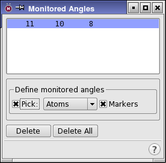

| Using | Features | Links |
This panel is used to set up angles to be monitored during a dynamics simulation. Results are saved in the .mmo file.
To open this panel, click Angles in the Monitor tab of the Dynamics panel or the MC/SD panel.
To define an angle to be monitored, choose Atom or Bond from the Pick menu, and click on three atoms or two bonds in the Workspace that define an angle. When the angle is defined, the three atoms appear in the list at the top of the panel. The defined angles are marked with a green solid line, a dotted line through the angle, and an eye icon. The selected angle is distinguished by a thicker line.
To redefine an item, select it in the list and then pick the atoms or bonds in the Workspace.
To delete an angle from the list, select it in the list and click Delete. To delete all monitored angles, click Delete All.

Lists the angles to be monitored. After the third atom is picked, a new entry appears in the list.
The Define monitored angles section contains the standard picking controls, which are used to select atoms that define an angle. It also contains a Markers option, which you can use to show markers for the monitored angles in the Workspace.
To delete a monitored angle, select it in the Monitored Angles List, then click Delete.
Click this button to delete all monitored angles.